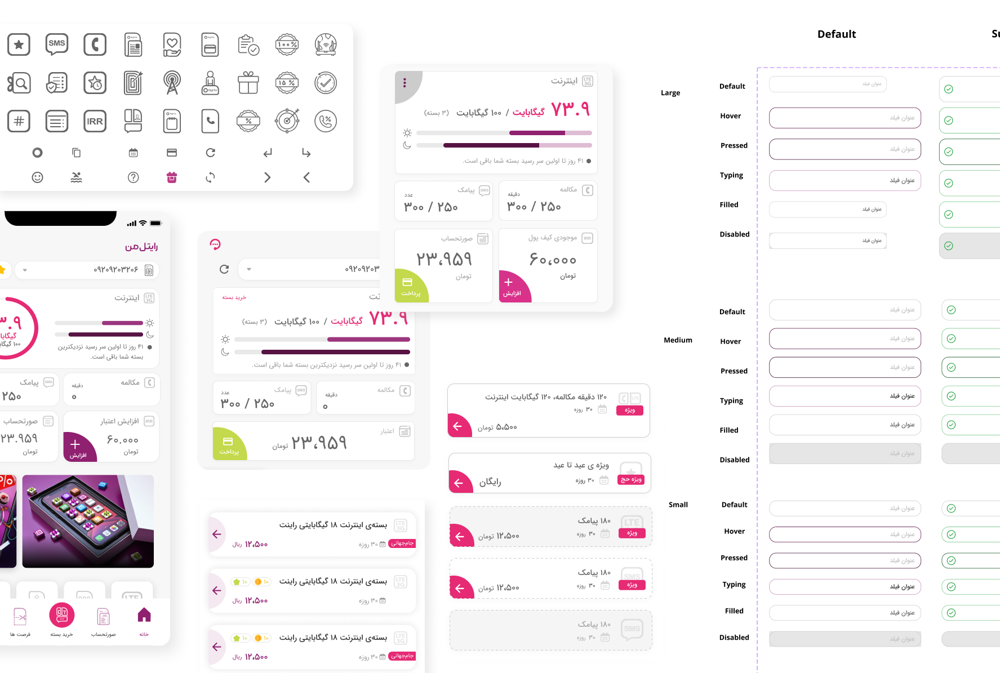
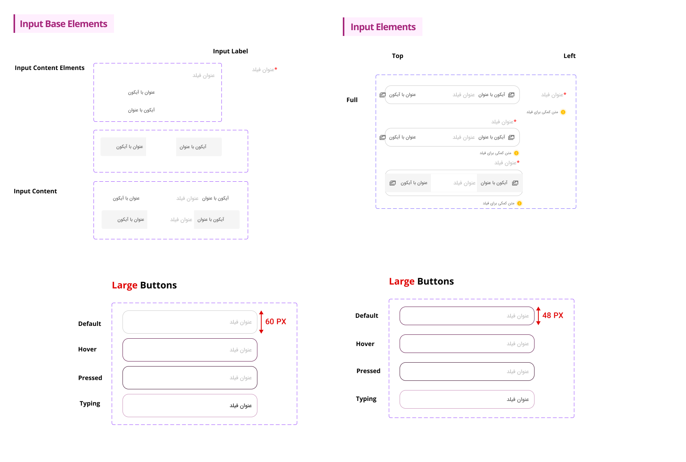
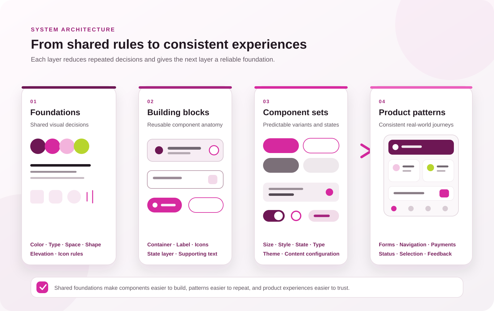
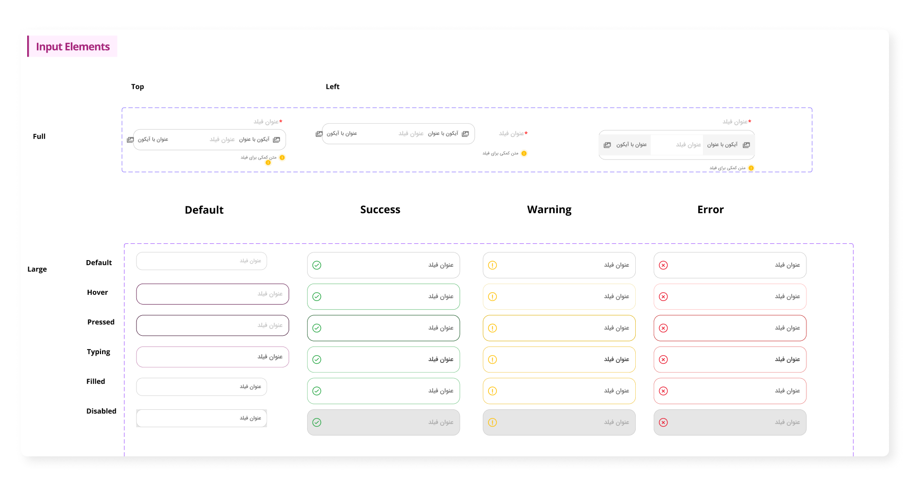
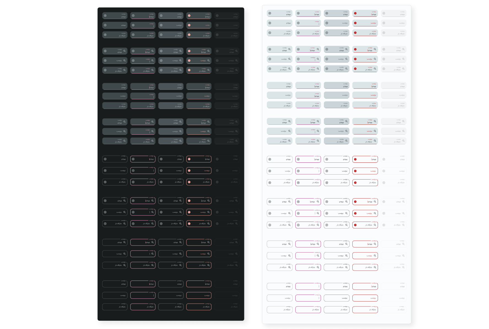
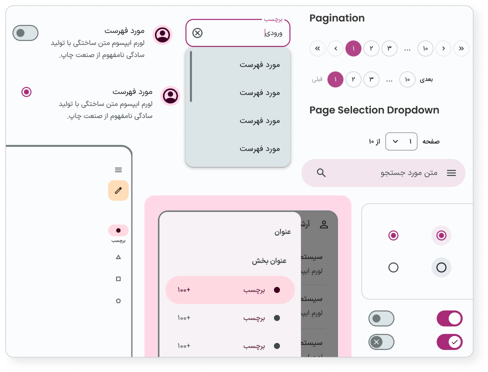

01 — Project snapshot
Creating a shared language across products
Rightel’s digital ecosystem included customer-facing mobile and web experiences created by multiple teams over time. An earlier design system existed, but its components were not fully integrated. Similar patterns had been recreated in different files, and their visual treatment, states, and behavior did not always match.
I helped evolve that foundation into a more complete system: a structured component library with clearer variants, interaction states, light and dark themes, reusable building blocks, and documentation that designers could apply consistently.
My contribution
- Audited the older library and identified duplicated, missing, and inconsistent component patterns.
- Defined clearer component anatomy, properties, variants, and interaction states.
- Expanded components for common product contexts instead of solving each screen independently.
- Supported both light and dark schemes where the product required them.
- Documented usage guidance and examples to make the library easier to understand and adopt.
- Connected design-system decisions to patterns used across the My Rightel product experience.
02 — The problem
The older library did not behave as one system
The main issue was not the absence of components. It was that existing components had evolved separately. Teams could select visually similar elements that used different dimensions, colors, state logic, icon placement, or naming. Consistency depended too heavily on individual designers remembering which version to use.
Duplicate patterns
Similar controls existed in multiple forms, making the correct source of truth unclear.
Incomplete states
Enabled designs existed more often than focused, pressed, error, disabled, or loading behavior.
Unclear configuration
Icons, labels, sizes, and themes were not always represented as predictable component properties.
Screen-level inconsistency
When the library did not cover a product need, local components were created and gradually drifted apart.

03 — Audit and diagnosis
Finding the rules hidden inside existing screens
I compared the older library with patterns already used across Rightel products. Rather than treating every visual difference as a new requirement, I grouped components by purpose and examined their anatomy, sizes, configurations, states, theme behavior, and product context.
What I looked for
- Components serving the same purpose under different names.
- One-off overrides that should become explicit variants or properties.
- Missing states that forced designers to detach instances.
- Color or spacing differences without a functional reason.
- Patterns that worked in one flow but could not scale across products.
- Accessibility risks in feedback, selection, focus, contrast, and touch targets.
One name, two different sizes
The audit exposed repeated text-field components with conflicting dimensions. Both versions were categorized as Large, but one used a 60px height while another used 48px. Because neither version expressed a distinct functional need, designers could choose different components for equivalent situations and produce inconsistent forms across the product.

A difference became a component property only when it represented a real use case. Accidental differences were removed; meaningful differences were made explicit and reusable.
04 — System approach
From visual assets to predictable component logic
The evolved system was organized around a consistent model: foundations define shared visual rules, building blocks define reusable anatomy, and component properties express only the variations needed by product teams.
Normalize foundations
Align color roles, typography, spacing, shape, elevation, and icon usage so components share the same visual language.
Define anatomy
Separate stable structure from configurable content—for example, container, label, leading icon, trailing icon, state layer, and supporting text.
Model real variants
Represent size, style, state, type, theme, and content configuration as properties instead of disconnected components.
Document decisions
Pair component sets with definitions, examples, and usage guidance so consistency does not rely on the library author.

05 — Component evolution
Making consistency visible in the component sets
The new library expands the system across iconography, chips, dialogs, dividers, navigation bars, buttons, radio buttons, snackbars, switches, sliders, and text fields. The strongest before-and-after story comes from showing how representative components became more complete and predictable.
Buttons: one model instead of disconnected styles
In the older library, button geometry was not governed by a consistent rule. The Large button used a 4px border radius while the Medium button used 16px, creating a stronger shape change than the size distinction required. The family also documented visual styles and sizes without covering the complete set of interaction states, leaving designers to define missing behavior locally.
Buttons were rebuilt as a structured family covering multiple sizes and configurations, including filled, tonal, elevated, outlined, and text treatments. Primary, secondary, tertiary, success, and error roles could be expressed with consistent enabled, hovered, focused, pressed, and disabled behavior. Leading and trailing icon configurations became deliberate properties rather than separate local solutions.
Text fields: designing the full interaction, not only the default
Text fields were organized around filled and outlined styles with predictable label, placeholder, and input-text configurations. Leading and trailing icons could be enabled independently, while focused, hovered, error, and disabled states provided the feedback required in real forms. Matching dark-scheme components reduced the need for screen-specific overrides.

The documentation defined filled and outlined anatomy, default and error states, spacing and layout measurements, and practical usage guidance. Scroll inside the viewer or use the arrow controls to explore it.
The consolidated component family brought filled and outlined textfields into one predictable structure. It covered light and dark themes, leading and trailing icon configurations, labels, placeholders, input values, and consistent enabled, focused, hovered, error, and disabled states.

Navigation and feedback: shared behavior across journeys
Navigation bars were defined for three, four, and five segments, with icon-only or icon-and-label configurations, active and inactive behavior, and badge options. Snackbars and toast notifications gained clearer default, error, and success states, with explicit action, close, icon, and line-length configurations. These definitions reduced the chance that each product flow would invent its own navigation or feedback behavior.
Controls and supporting components
Radio buttons, switches, sliders, chips, dividers, dialogs, and iconography were developed with the same logic. Selection, hover, focus, press, and disabled behavior were treated as system requirements. Component documentation also included light and dark schemes, bilingual or text-direction needs where relevant, and usage examples for product teams.

06 — Documentation and governance
A system becomes valuable when teams can use it correctly
Component completeness alone does not prevent inconsistency. The evolved library therefore pairs components with clearer names, definitions, property structures, examples, and guidance. This makes the intended pattern easier to discover and reduces the need to detach or rebuild instances.
How the system supports consistency
- A shared source of truth for reusable interface patterns.
- Predictable property naming across component families.
- Explicit states and semantic roles instead of undocumented overrides.
- Light and dark behavior designed as part of the component.
- Usage documentation and examples alongside production assets.
- A repeatable review process for deciding whether a request belongs in the system.
List component documentation: a representative example of the structure applied across the library, connecting component anatomy, interaction states, layout measurements, configuration options, and practical usage guidance.
Contribution model
- Identify a repeated product need.
- Check whether an existing component or property already supports it.
- Validate that the difference is functional, not accidental.
- Add or update the smallest reusable building block.
- Document the decision and review its use in a real product context.
07 — Outcomes and evidence
What changed—and what still needs measurement
Broader component coverage
The evolved library includes structured sets for core controls, navigation, feedback, input, and supporting patterns.
More predictable configuration
Variants and properties make sizes, styles, icons, themes, and interaction states visible within the component architecture.
Less UI drift and rework
A clearer source of truth should reduce detached instances, duplicate local components, and repeated design decisions.
Faster design and implementation
Reusable patterns should help designers assemble flows faster and give developers more consistent specifications.
The Figma library demonstrates the scope and structural consistency of the redesign. Adoption rate, reduction in design time, implementation speed, detached-instance frequency, and UI-defect reduction should be reported as measured outcomes only when team or product data is available.
Recommended system-health metrics
- Component adoption across active product files.
- Number of detached or locally recreated components.
- Time required to design and hand off common flows.
- Design-system-related implementation defects.
- Coverage of required interaction and accessibility states.
08 — Reflection
Consistency is a product decision, not a cosmetic cleanup
This work reinforced that a design system should not simply collect finished UI. It should explain why components behave as they do, which differences are meaningful, and how teams can extend the system without recreating the fragmentation it was designed to solve.
The most important shift was from designing individual visual examples to defining reusable logic. By treating states, configurations, themes, and documentation as part of the component itself, the evolved system created a stronger foundation for consistent product experiences.
The next step would be to pair the library with adoption data and implementation feedback, then prioritize changes based on repeated product needs rather than the number of components alone.